Architecture
Agent Auditor is a closed loop: observe agent runs, turn failures into tests, explain them, and gate every change with evidence.


Pieces
| Package | Job | Pure core (no database) | Phase |
|---|---|---|---|
api/, models.py |
Ingestion, versions, audit events | - | 1 |
sdk/ |
Tracing, replay, canary router, client calls | serialize, _mapper |
2 |
evals/ |
Scorers, pass-rate comparison between versions | scorers, compare, stats |
3 |
drift/ |
Is the current window different from the reference? | detect, stats |
4 |
regress/ |
Failures become de-duplicated regression cases, replay verdicts | fingerprint, expectations |
5 |
rootcause/ |
Why did this run fail? | classify, summary, errors |
6 |
canary/ |
Candidate vs baseline: five checks, one verdict | checks, decide |
7 |
release/ |
Gate, approvals, promotion, rollback | gate |
8 |
worker.py |
Scores and diagnoses new runs outside requests | run_once |
9 |
Every package keeps its statistics and decision rules in plain functions that take plain data. That is why most of the logic can be tested without a database, and why a number in a report can be traced to one small function.
Data flow
- The SDK sends each run (input, output, ordered steps, version label, environment) to
POST /v1/runs. It never raises into your agent; a background thread with a bounded queue does the sending. - The worker (or an explicit API call) writes
EvalResultrows andRunDiagnosisrows. Everything later reads those rows instead of re-reading steps. - Failed runs become
RegressionCaserows (one per fingerprint). Replaying the suite against a candidate version produces aReplayRunwith per-case outcomes. - A canary evaluation compares the candidate's
canaryruns with the baseline'sproductionruns and stores aCanaryReport. - A
Releaseasks to make the candidate active. The gate reads the newest canary report, the newest replay and the approvals; promotion flipsAgentVersion.is_active; rollback flips it back. - Every state change writes an
AuditEvent, including refusals.
Design decisions worth knowing
- Statistics are conservative and explicit. Fisher exact tests, Bonferroni correction across the scorers or causes tested, effect-size thresholds on top of p-values, and "insufficient data" as a first-class answer.
- Rules before models. Root-cause classification is a deterministic rule set with stated precedence, so a diagnosis can be explained and a wrong one can be fixed by editing a rule.
strengthis not a probability. It says how much evidence a rule had, not how often it is right.- The database is the integration point. No message broker. The worker polls; Postgres is the only service besides the API.
- Promotion is a record, not a deployment. The platform marks which version is active; your service reads it.
What is deliberately not here
User authentication and authorization (one shared API key), multi-tenant isolation, a streaming ingestion path, LLM-as-judge scorers, and automatic rollback. Each is a reasonable next step, and none is claimed.